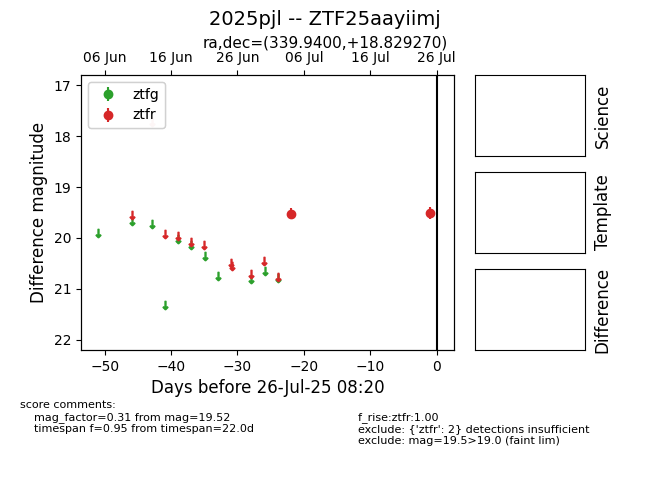

Target 2025pjl at 2025-07-26 08:20, see:
FINK: fink-portal.org/2025pjl
Lasair: lasair-ztf.lsst.ac.uk/objects/2025pjl
ALeRCE: alerce.online/object/2025pjl
TNS: wis-tns.org/object/2025pjl
YSE: ziggy.ucolick.org/yse/transient_detail/2025pjl
alt names
ZTF25aayiimj (ztf,fink)
2025pjl (tns,yse)
coordinates:
equatorial (ra, dec) = (339.9400,+18.82927)
galactic (l, b) = (84.5554,-34.05150)
photometry
last ztfr=19.52
2 ztfr detections
